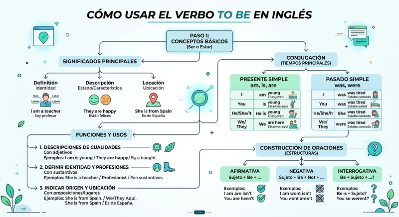

1. Introducción al Verbo To Be: El Corazón del Inglés
Cuando comenzamos a estudiar inglés, el primer obstáculo y a la vez el concepto más importante con el que nos topamos es el verbo to be . A diferencia del español, donde contamos con dos verbos totalmente separados para expresar identidad y estado (ser y estar), el idioma inglés utiliza un único verbo multifuncional para cubrir ambas realidades.
Comprender cómo opera esta estructura gramatical no es simplemente un requisito escolar; es la piedra angular que te permitirá presentarte, describir tu entorno, indicar tu profesión, hablar de tu estado de ánimo o mencionar dónde te encuentras. Sin el verbo to be, mantener una conversación fluida en inglés resulta completamente imposible.
2. Conjugación en Presente Simple (Present Simple)
En el tiempo presente, el verbo to be experimenta una transformación radical dependiendo del pronombre personal o sujeto al que acompaña. A diferencia de otros verbos regulares que apenas cambian en la tercera persona, el verbo to be adopta tres formas distintas: am , is y are .
- I am (Yo soy / Yo estoy)
- You are (Tú eres / Tú estás - Usted es / Usted está)
- He is (Él es / Él está)
- She is (Ella es / Ella está)
- It is (Eso es / Eso está - Para animales o cosas)
- We are (Nosotros somos / Nosotros estamos)
- They are (Ellos son / Ellos están)
Ejemplo Práctico en Afirmativo
I am a student and I am happy.
Traducción: Yo soy un estudiante y estoy feliz.
3. Oraciones Negativas y Preguntas
Construir oraciones negativas con el verbo to be es sumamente sencillo. No necesitas agregar ningún auxiliar externo como do o does ; simplemente debes colocar la partícula not inmediatamente después del verbo.
Por ejemplo, para decir que no estás cansado, utilizas: I am not tired . En la práctica diaria con hablantes nativos, es muchísimo más común escuchar las formas contraídas, tales como isn't (is not) o aren't (are not).
Ejemplo Práctico en Negativo
She isn't at home today.
Traducción: Ella no está en casa hoy.
En cuanto a la estructura interrogativa, el orden de las palabras se invierte por completo. En lugar de colocar el sujeto primero y luego el verbo, colocamos el verbo to be al inicio de la oración, seguido del sujeto.
Ejemplo Práctico en Interrogativo
Are you ready for the test?
Traducción: ¿Estás listo para el examen?

4. Pasado y Futuro del Verbo To Be
El verbo to be también cambia cuando queremos referirnos a eventos ocurridos en el pasado o proyecciones hacia el futuro. Conocer estas variaciones te otorgará la habilidad temporal indispensable para narrar historias o planificar eventos.
Pasado Simple (Past Simple)
En el pasado, las tres formas del presente (am, is, are) se reducen únicamente a dos opciones: was y were .
- I was (Yo fui / Yo estuve)
- You were (Tú fuiste / Tú estuviste)
- He / She / It was (Él / Ella / Eso fue o estuvo)
- We were (Nosotros fuimos / estuvimos)
- They were (Ellos fueron / estuvieron)
Ejemplo en Pasado
We were at the beach last weekend.
Traducción: Estuvimos en la playa el fin de semana pasado.
Futuro Simple (Future Simple)
Para el tiempo futuro, la estructura es sumamente regular y sencilla, ya que se utiliza el auxiliar de futuro will seguido de la forma base be para todos los pronombres personales sin excepción.
Ejemplo en Futuro
I will be a professional engineer next year.
Traducción: Seré un ingeniero profesional el próximo año.
5. Usos Principales en la Vida Real
¿En qué momentos exactos utilizamos el verbo to be al comunicarnos? A continuación, enumeramos los cuatro contextos principales donde su uso es obligatorio:
- Identidad y Nombre: Para indicar quiénes somos (I am Carlos).
- Profesiones: Para mencionar a qué nos dedicamos (She is a doctor).
- Edad: En inglés, a diferencia del español, la edad se expresa utilizando el verbo to be en lugar del verbo tener (He is twenty years old).
- Estados de ánimo y condiciones físicas: Para expresar cómo nos sentimos o cómo luce algo (The coffee is hot).
6. Errores Comunes de Hispanohablantes
El error más frecuente cometido por quienes hablamos español como lengua materna radica en intentar traducir literalmente oraciones relacionadas con la edad o las sensaciones físicas utilizando el verbo to have (tener). Decir I have twenty years es completamente incorrecto en inglés; la forma adecuada y natural es I am twenty years old .
Otro error habitual es omitir el sujeto en las oraciones afirmativas o negativas. En español podemos decir "Estoy cansado" sin mencionar explícitamente el pronombre "yo", pero en inglés el sujeto es obligatorio: I am tired .
🌱 Puntos Clave para Recordar
- El verbo to be cumple la función tanto del verbo ser como del verbo estar en español.
- En presente simple adopta tres formas esenciales: am, is y are.
- Para formar oraciones negativas, simplemente añade la partícula not después del verbo.
- Las preguntas invierten el orden, colocando el verbo to be al inicio de la estructura.
- Recuerda usar to be para indicar la edad y las sensaciones en lugar del verbo tener.